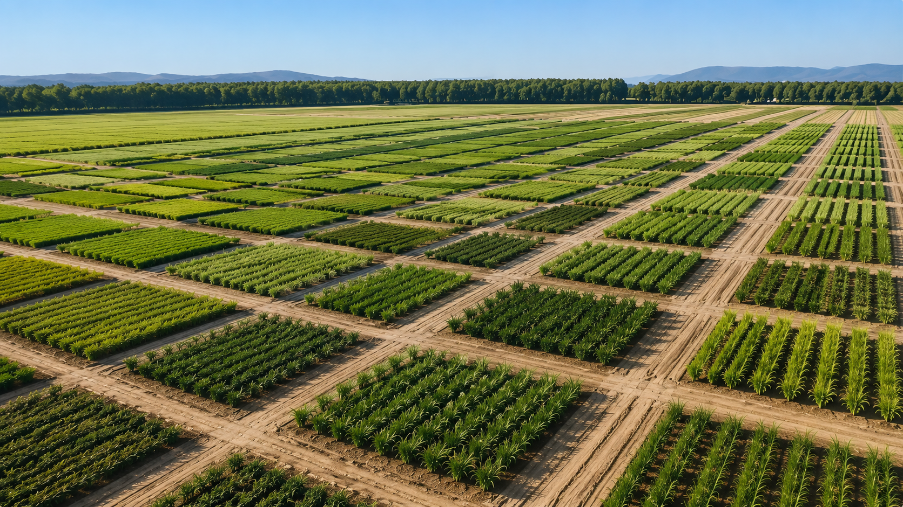
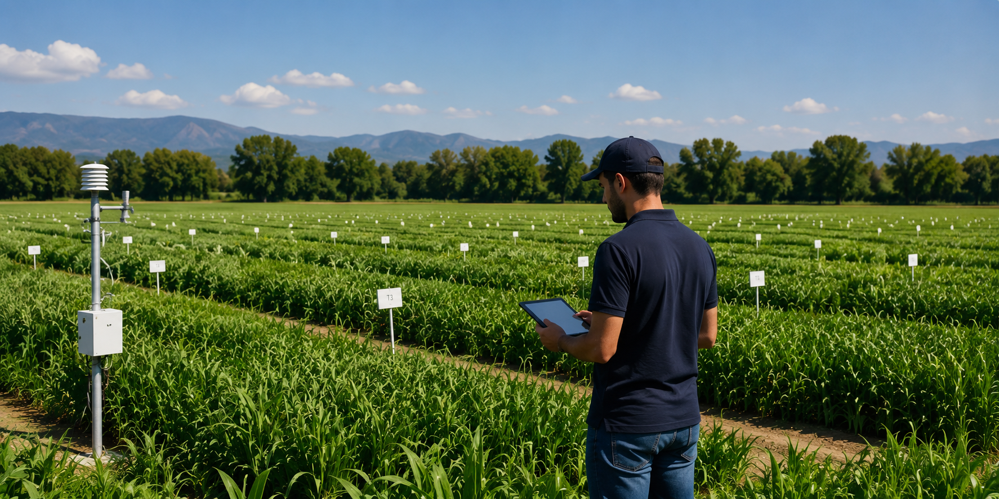
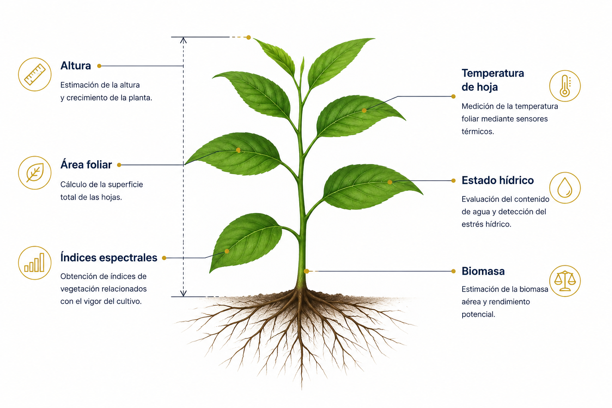
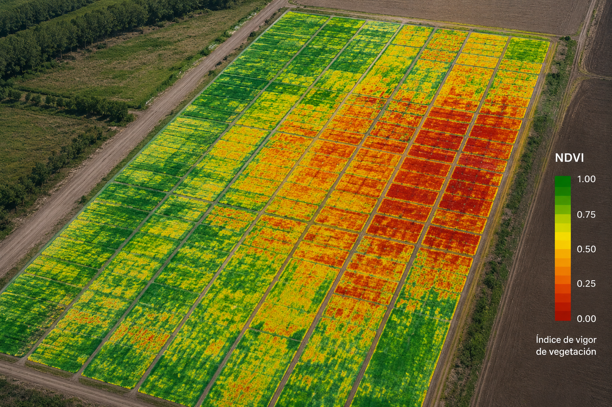
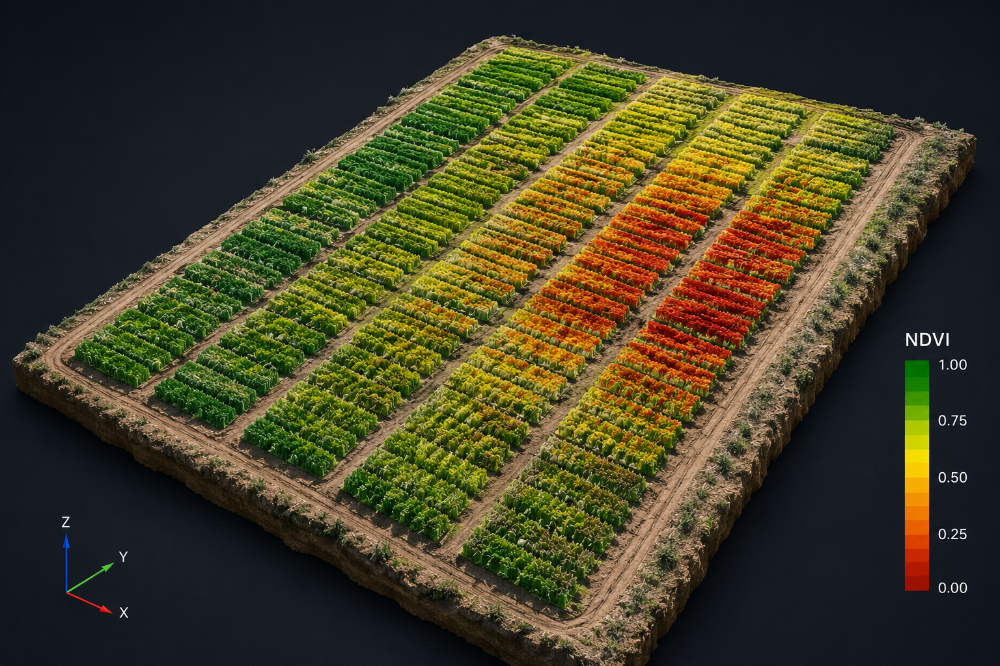

Altura
Estimación automática del crecimiento y desarrollo de las plantas.

LÍNEA DE INVESTIGACIÓN
Cuantificación objetiva de las características morfológicas y fisiológicas de los cultivos mediante sensores remotos, plataformas UAV e inteligencia artificial.
INTRODUCCIÓN
El fenotipado vegetal permite medir de forma objetiva las características de las plantas a gran escala, integrando observaciones obtenidas mediante sensores terrestres, plataformas UAV e imágenes multiespectrales. Estas tecnologías proporcionan información precisa sobre el crecimiento, el vigor y el estado fisiológico de los cultivos.
La combinación de técnicas de teledetección, análisis de imagen e inteligencia artificial facilita la obtención de datos repetibles y no destructivos, fundamentales para programas de mejora genética, agricultura de precisión y estudios sobre la respuesta de las plantas frente a distintos factores ambientales.

¿QUÉ ES EL FENOTIPADO?
El fenotipado vegetal consiste en la cuantificación objetiva de las características morfológicas, fisiológicas y bioquímicas de las plantas mediante tecnologías de observación de alta precisión.
La integración de sensores remotos, plataformas UAV, cámaras multiespectrales, sensores térmicos e inteligencia artificial permite evaluar miles de plantas de forma rápida, precisa y completamente no destructiva.
Estos datos son fundamentales para comprender la respuesta de los cultivos frente al estrés hídrico, las condiciones ambientales y las diferentes estrategias de manejo, acelerando además los programas de mejora genética.

VARIABLES QUE SE MIDEN
Estimación automática del crecimiento y desarrollo de las plantas.
Cuantificación de la superficie ocupada por el cultivo.
Evaluación del estado fisiológico mediante imágenes térmicas.
NDVI, NDRE y otros indicadores relacionados con el vigor.
Detección temprana del estrés por déficit de agua.
Estimación del desarrollo vegetativo y producción potencial.
DATOS QUE GENERAN CONOCIMIENTO
La integración de imágenes RGB, multiespectrales y térmicas con algoritmos de análisis permite obtener mapas de vigor, modelos tridimensionales, índices de vegetación y métricas cuantitativas que describen el comportamiento del cultivo.
Estas herramientas facilitan el estudio de la variabilidad espacial y temporal de las parcelas experimentales, proporcionando información objetiva para la toma de decisiones en investigación y agricultura de precisión.


APLICACIONES
Identificación de genotipos superiores mediante observaciones objetivas y repetibles.
Optimización del manejo agrícola utilizando información espacial de alta resolución.
Comparación objetiva del comportamiento de diferentes variedades en campo.
Evaluación de la respuesta de las plantas frente al estrés hídrico, térmico y ambiental.